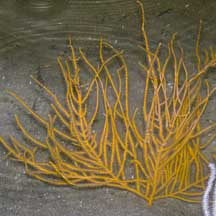
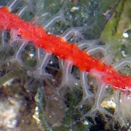

|
|
|
gorgonian
text index | photo
index
|
| Phylum Cnidaria > Class Anthozoa > Subclass Alcyonaria/Octocorallia > Order Gorgonacea |
| Skinny
sea fans Astrogorgia sp.* Family Plexauridae updated Dec 2019 Where seen? This sea fan with long, skinny branches is sometimes seen in numbers on our Northern shores. On coral rubble, rocks, stones and artificial hard surfaces. Features: 10-20cm long. Generally with long branches without much side branching. In some colonies, the long branches are neatly and evenly spaced along the central stem on one plane so the whole colony looks like the veins of a leaf. But in some large colonies, the long branches are more tangled. Stems long, skinny and somewhat flattened often with a ridge 'mid-rib' along the centre of the stem. Colours seen include red, maroon, orange and yellow. The white polyps are relatively large (0.5cm) compared to the stem and emerge on opposite edges of the flattened stems. Those seen on our shores often have all kinds of small animals clinging onto to them including tiny colourful brittle stars, transparent shrimps and ovulid snails. |
 East Coast, Jun 06 |
 Changi, Jul 09 |
 Chek Jawa, Jul 05 |


*Species are difficult to positively identify without close examination.
On this website, they are grouped by external features for convenience of display.
| Skinny sea fans on Singapore Shores |
On wildsingapore
flickr
|
| Other sightings on Singapore shores |
|
Links
References
|